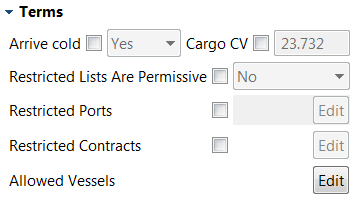

The Terms section determines important conditions regarding the cargo. The exact inputs in this section depend on whether the slot is a load or discharge slot, and whether it is FOB or DES.
|
Arrive cold |
If the “Arrive cold” input is set to “No”, then the vessel can be scheduled to arrive for its load with “warm” empty tanks. Overrides port. |
|
Cargo CV |
The “Cargo CV” input specifies the calorific value (CV) of the LNG loaded at this slot in mmBtu per m3. |
|
Cargo Type |
The “Cargo Type” input may be set to “Shipped” to require that the LNG for this transaction must have been actually shipped from another port, or set to “Not Shipped” to require that the LNG must be bought and sold at the same port (e.g. in a FOB-FOB or DES-DES deal). The default setting is “Any”, which allows the sale to be paired with any purchase. |
|
Min CV Value / Max CV Value |
The “Min CV Value” and “Max CV Value” inputs allow minimum and maximum permissible calorific values (CV) in mmBtu per m3 to be associated with a discharge slot. |
A particular LNG load may have legal or practical restrictions on which port the LNG may be shipped to, which contracts it can be sold under, and which vessels can carry it. The same considerations may hold vice versa for discharges. These inputs determine those restrictions:
|
Restricted Ports |
The “Restricted Ports” input specifies a list of ports which the reciprocal transaction may not occur at (or, if “Restricted Lists Are Permissive” is set to “Yes”, it must occur at one of them). |
|
Restricted Contracts |
The “Restricted Contracts” input specifies a list of contracts which the reciprocal transaction may not occur under (or, if “Restricted Lists Are Permissive” is set to “Yes”, it must occur under one of them). |
|
Allowed Vessels |
If the “Allowed Vessels” input is set, it specifies a list of the vessels which can load (or discharge) at this slot. If it is left blank, any vessel is permitted. |
Note: These override the contract defaults. If one value is overridden, then all three are deemed to override the contract.
|
Assignment |
These transactions are not part of shipped cargoes, so the cargo itself is not assigned a vessel. The “Assignment” input determines which vessel is nominated for the transaction. |
|
Divertible |
A non divertible slot is defined based upon it’s transfer point. For a DES purchase, this is the port and date where ownership is taken. If it is divertible then the some modelling of the third party shipping is involved (using the nominated vessel assignment). For a divertible DES purchase, the load port and estimated load date is specified. Divertible DES purchases also have a shipping days limit defining the maximum permitted round trip time for slot pairings. |
|
Sales Delivery Type |
The “Sales Delivery Type” input may be set to “Shipped” to require that the LNG for this transaction must have been actually shipped from another port, or set to “Not Shipped” to require that the LNG must be bought and sold at the same port (e.g. in a FOB-FOB or DES-DES deal). The default setting is “Any”, which allows the sale to be paired with any purchase. |